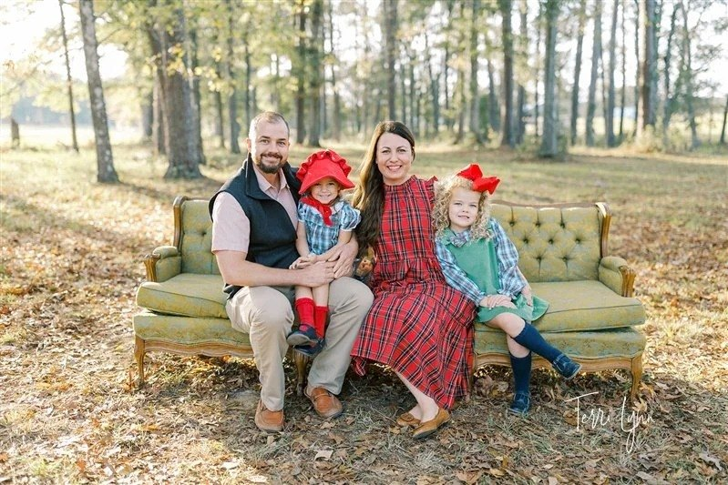
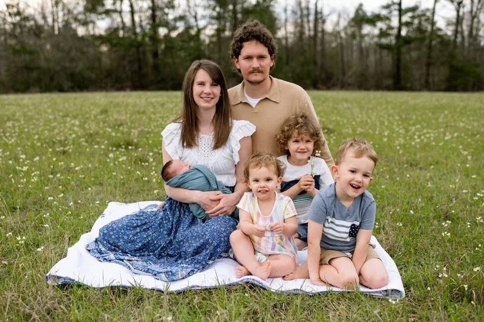

"…and thus I make it my ambition to preach the gospel, not where Christ has already been named, lest I build on someone else's foundation, but as it is written, 'Those who have never been told of him will see, and those who have never heard will understand.'"Romans 15:20–21 (ESV)
Our staff & team

Pastor of Bluff Creek since 2015 — and our youth pastor before that (2012–14). Louisiana Tech (Communication) and New Orleans Baptist Theological Seminary (M.Div.). Married to Rikki; dad to Hudson and Magnolia. Retired MMA fighter, surfer, golfer, scuba diver, woodworker. He'd love to meet you for coffee.
A Clinton native, married to Joey for 20+ years, mom to Jackson and D'Lanie, and principal of Central Intermediate School. Julie leads the children's time in our services.

Ashleigh leads Kidz @ the Creek. Daughter of a former youth minister, married to Denver, and mom to Berlin, Ryker, Ruth, and Gabriel.
Born and raised in Bluff Creek, married to Allen since 1978, mom to Alison and Jamie — and more than 30 years of faithful service keeping this church running.
Born and raised in Bluff Creek and a member for 45+ years. Sunday School and VBS teacher; mom to Kaitlin, Parker, and Preston.
A team of musicians leads our worship every Sunday — theologically rich, doctrinally sound hymns. All musical talents are welcome; come sing or play with us.
We're praying for our next youth minister.
Bluff Creek is searching for the leader God has for Youth @ the Creek. If that's you — or someone you know — we'd love to hear from you.
What we believe
We affirm the Bible as God's inspired Word and hold to the Baptist Faith & Message (2000).
Becoming a member
By profession of faith and baptism, by letter, or by statement — during the invitation at the end of any Sunday morning service.